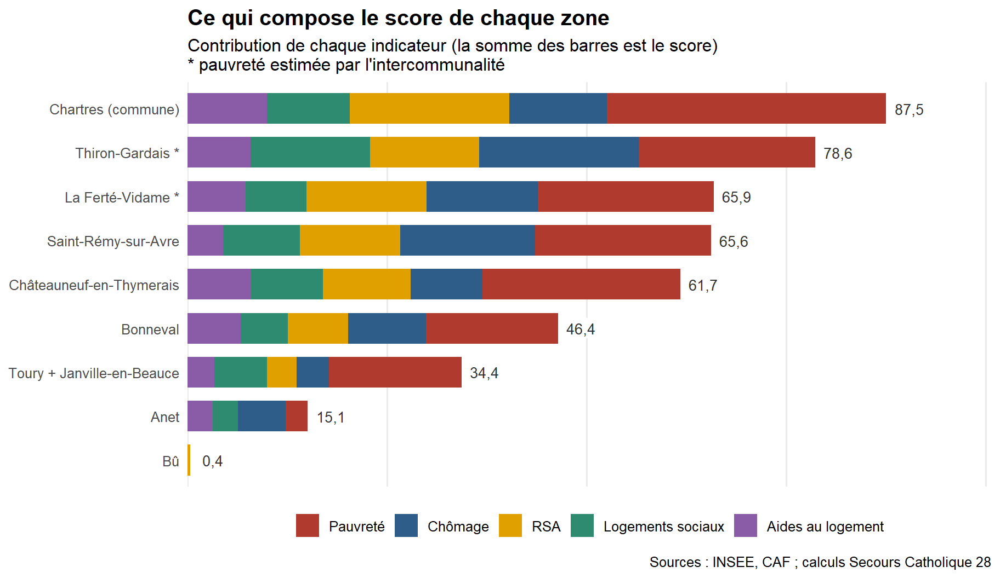
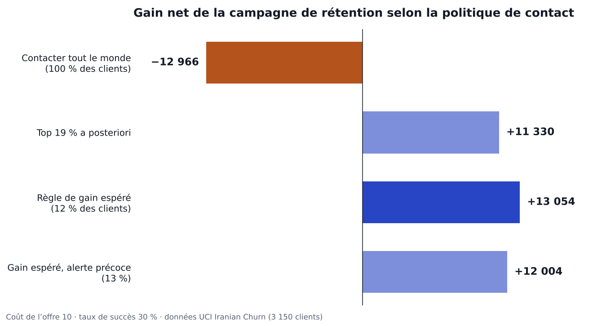
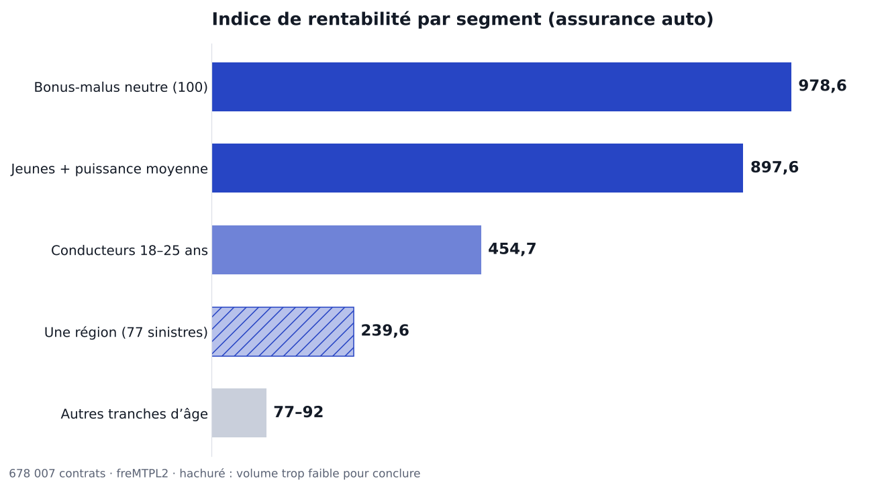

Diagnostic territorial des besoins sociaux
Secours Catholique d'Eure-et-Loir : score composite pour classer neuf zones et repérer où concentrer les actions.
43 %de pauvreté aux Clos (Chartres), contre 13,3 % dans le département
Bonjour, je suis
Data Analyst · Prévision, assurance et statistique publique
Je transforme des données en décisions chiffrées, et j'indique jusqu'où on peut s'y fier. Double master en statistique économique et en analyse quantitative de l'assurance, six mois en prévision des ventes, et une mission bénévole d'analyse de la pauvreté pour le Secours Catholique.
classées par niveau de besoin social pour orienter les actions du Secours Catholique d'Eure-et-Loir, avec un classement testé sous 5 hypothèses.
des clients à contacter pour une campagne de rétention rentable (+13 054 de gain net), contre −12 966 en contactant tout le monde.
contrats auto analysés pour isoler les segments sous-tarifés et proposer une surprime ciblée.
de prévision des ventes chez M-extend, de la collecte multi-sources à la restitution dans Streamlit.
Je suis Data Analyst, formée à la fois à la statistique économique et à l'actuariat. Ce double regard me sert à poser la bonne question avant de choisir le modèle : quelle décision l'analyse doit-elle éclairer, et quelle erreur coûte le plus cher ?
Pendant mon stage de fin d'études chez M-extend, j'ai amélioré un algorithme de prévision des ventes en y intégrant des facteurs explicatifs, puis j'ai restitué les résultats aux équipes métiers dans une application Streamlit.
En parallèle, j'aide bénévolement le Secours Catholique d'Eure-et-Loir à prioriser ses actions grâce à un diagnostic statistique de la pauvreté, construit uniquement à partir de données publiques.
Je cherche un poste de Data Analyst, Data Scientist junior ou chargée d'études statistiques, de préférence dans l'assurance, le conseil, la distribution ou le secteur public.
Projets professionnels, associatifs et personnels. Chaque étude de cas part d'une question métier et se termine par une recommandation.

Secours Catholique d'Eure-et-Loir : score composite pour classer neuf zones et repérer où concentrer les actions.

Prédiction du départ client transformée en règle de décision rentable pour une campagne de rétention.

Tableau de bord qui isole les segments sous-tarifés et sépare les vrais signaux des effets de petits volumes.
Intégration de facteurs endogènes et exogènes, comparaison de modèles de séries temporelles et de machine learning, restitution dans Streamlit.
Quatre habitudes que l'on retrouve dans chaque projet.
L'accuracy cache souvent l'essentiel. Je mesure ce que le métier paie : gain net, rappel sur les cas utiles, sinistralité.
Churn : PR-AUC et courbe de profit plutôt qu'accuracy.Un classement qui change dès qu'on bouge un poids ne doit pas guider une décision. Je le vérifie et je dis ce qui tient.
Secours Catholique : 5 hypothèses, extrémités stables, milieu fragile.Pas de moyenne de pourcentages, secret statistique traité, années de source indiquées sous chaque graphique.
Taux recalculés à partir des effectifs INSEE et CAF.Chaque livrable a sa section limites : petits effectifs, arrondis, associations qui ne sont pas des causes.
Assurance : segment régional écarté faute de volume.Organisées par domaine, avec le contexte où chacune a servi.
Disponible immédiatement, partout en France, pour un poste de Data Analyst, Data Scientist junior ou chargée d'études statistiques.